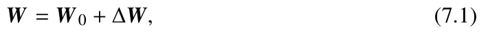
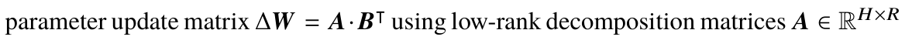
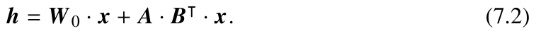
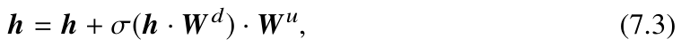
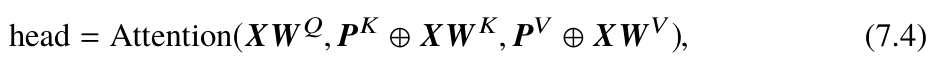

Chapter 7 · Instruction Tuning第 7 章 · 指令微调
指令微调（Instruction Tuning）的核心矛盾是：要跟着任务走，就得改参数；可一个 70 亿参数的大模型，光是存下全量参数和它的优化器状态就要上百 GB 显存。参数高效微调（Parameter-Efficient Fine-Tuning, PEFT）的思路是——冻结预训练权重 \(W_0\)，只训练一小撮额外的参数。本页覆盖第 7.3 节里的 4 条编号公式：LoRA 的权重分解式 (7.1) 与低秩分解定义（无编号）、前向传播式 (7.2)、Adapter 的瓶颈结构式 (7.3)、Prefix tuning 的注意力式 (7.4)。合在一起它们回答同一个问题：那一小撮参数该插在哪里，才能既省显存又不掉效果？LoRA 插在权重上（可合并、零推理开销），Adapter 插在残差流上（串行瓶颈小网络），Prefix 插在键值缓存上（不改权重，改注意力分布）。
原书位置第 7 章 7.3 节 Parameter-Efficient Fine-Tuning 代码实践见 7.4.3 节
本页公式一览
| 编号 | 一句话 | 核心数学工具 |
|---|---|---|
| 7.1 | 全参数微调写法 \(W=W_0+\Delta W\) | 梯度下降一步的展开 |
| （无编号） | LoRA 的低秩分解 \(\Delta W=AB^{\top}\) | 奇异值分解 + Eckart–Young 定理 |
| 7.2 | 前向传播 \(h=W_0x+AB^{\top}x\) | 矩阵乘法结合律、零初始化 |
| 7.3 | Adapter 瓶颈模块 \(h=h+\sigma(hW_d)W_u\) | 降维–非线性–升维、残差连接 |
| 7.4 | Prefix 注意力 \(\mathrm{Attention}(XW^Q,\,P^K\oplus XW^K,\,P^V\oplus XW^V)\) | 分块矩阵乘法、softmax 的分母 |
| 补充 | 秩/尺度解耦 \(\Delta W=\frac{\alpha}{r}AB^{\top}\) | 梯度量纲分析 |
先约定记号
| 符号 | 含义 | 形状 / 量纲 |
|---|---|---|
| \(H\) | 隐藏维数（hidden size），一个 token 的表示长度 | 标量，LLaMA-7B 中 \(H=4096\) |
| \(R\)（或 \(r\)） | 低秩分解的秩（rank），即"瓶颈"宽度 | 标量，典型取 4/8/16/64 |
| \(x\) | 某个线性层的输入向量（一个 token 的表示） | \(\mathbb{R}^{H}\)（列向量） |
| \(h\) | 该线性层的输出向量 | \(\mathbb{R}^{H}\)（列向量） |
| \(W_0\) | 预训练得到的原始权重，冻结不更新 | \(\mathbb{R}^{H\times H}\) |
| \(\Delta W\) | 微调带来的权重增量，即"要学的东西" | \(\mathbb{R}^{H\times H}\)（但内在秩很低） |
| \(L_{\text{layer}}\) | 模型层数（原书用 \(L\)） | 标量，LLaMA-7B 中 \(L=32\) |
| \(T\) | 训练时一条样本的 token 数（序列长度） | 标量 |
(7.1)全参数微调的标准写法：\(W=W_0+\Delta W\)#
出处第 7 章 7.3.1 节 Low-Rank Adaptation (LoRA) 对照原文

原书公式 7.1① 公式
② 符号
| 符号 | 含义 | 形状 / 量纲 |
|---|---|---|
| \(W\) | 微调后的权重（真正参与前向计算的矩阵） | \(\mathbb{R}^{H\times H}\) |
| \(W_0\) | 预训练权重，微调期间冻结 | \(\mathbb{R}^{H\times H}\) |
| \(\Delta W\) | 权重增量。书里称 "gradient matrix for updates"，即梯度给出的更新量 | \(\mathbb{R}^{H\times H}\)，矩阵 |
③ 推导：这一步从哪来？
它就是一步梯度下降写开的结果。回忆带动量/不带量量的梯度下降（Gradient Descent, GD）：在第 \(k\) 步，参数沿负梯度方向移动学习率 \(\eta\) 倍，
其中 \(L\) 是训练损失（如交叉熵），\(\frac{\partial L}{\partial W}\) 是损失对权重矩阵的梯度。把第 \(0\) 步代进去：
于是把那个带负号的梯度重新起个名字，就叫 \(\Delta W\)。所以 (7.1) 有两种完全等价的读法：
- 读法一（优化视角）：\(W_0\) 是底座，\(\Delta W\) 是学出来的偏移量。所有 PEFT 方法做的事，都是换一种更省参数的方式去表示 \(\Delta W\)。
- 读法二（分析视角）：第一步梯度下降时 \(\Delta W=-\eta\,\partial L/\partial W\)。所以想压缩 \(\Delta W\)，就等于想压缩损失对 \(W\) 的梯度矩阵。这正是下一页要干的事。
④ 为什么 \(\Delta W\) 可以低秩？（数学依据）
这是 LoRA 全部灵感的来源，也是最值得细讲的一步。分三层。
第 1 层：梯度矩阵是"向量外积之和"，秩被序列长度卡住。线性层的输出是 \(h_t=W_0x_t\)，\(t=1,\dots,T\) 遍历一条样本的所有 token。损失 \(L\) 同时依赖所有 \(h_t\)。矩阵形式的链式法则（若 \(\mathbf{z}=f(\mathbf{y}),\mathbf{y}=g(\mathbf{x})\)，则 \(\frac{\partial \mathbf{z}}{\partial \mathbf{x}}=\frac{\partial \mathbf{z}}{\partial \mathbf{y}}\frac{\partial \mathbf{y}}{\partial \mathbf{x}}\)）在这里给出
这里用的是"分子布局"：\(\frac{\partial L}{\partial h_t}\) 视为行向量的梯度转置成列向量 \(g_t\)；由于 \(h_t=W_0x_t\) 对 \(W_0\) 是线性的，\(\frac{\partial h_t}{\partial W}\) 就是把 \(h_t\) 复制的那个线性算子，写成矩阵就是 \(x_t^{\top}\)。两项一外积，得到一个 \(H\times H\) 的秩一矩阵。把 \(T\) 个秩一矩阵加起来，秩最多是它们的秩之和：
更精确的写法是把 \(\frac{\partial L}{\partial W}\) 看成一个 \(H\times T\) 的矩阵 \(\big[\,g_1\ \cdots\ g_T\,\big]\) 乘一个 \(T\times H\) 的矩阵 \(\big[\,x_1\ \cdots\ x_T\,\big]^{\top}\)。两个矩阵相乘的秩不超过两者秩的较小值，于是
关键在于 \(T \ll H\)：序列长度是 512、2048，隐藏维是 4096。就算 \(T=H=4096\)，秩的上界也只是"和矩阵一样大"，毫无信息；只有当 \(T\) 相对 \(H\) 小时，结论才有价值。而"低秩"比"秩 \(\le T\)"更强的说法——有效秩（有效自由度数目）往往比 \(T\) 还小得多，这是经验观测，下面会明说。
第 2 层：把 \(\Delta W\) 做奇异值分解（SVD），低秩就是"奇异值集中"。任何实矩阵都能写成 \(\Delta W=\mathbf{U}\Sigma\mathbf{V}^{\top}\)，其中 \(\mathbf{U},\mathbf{V}\) 是正交矩阵（\(\mathbf{U}^{\top}\mathbf{U}=\mathbf{V}^{\top}\mathbf{V}=\mathbf{I}\)），\(\Sigma=\operatorname{diag}(\sigma_1,\dots,\sigma_H)\) 是对角奇异值矩阵，约定 \(\sigma_1\ge\sigma_2\ge\cdots\ge\sigma_H\ge0\)。数学上"低秩"的准确含义就是：只有前 \(r\) 个奇异值显著非零，其余可以忽略。这时
而 \(\mathbf{U}_r\Sigma_r\mathbf{V}_r^{\top}\) 正好可以拆成两个瘦长矩阵的乘积：取 \(A=\mathbf{U}_r\Sigma_r\)、\(B=\mathbf{V}_r\)，就得到 \(\Delta W\approx AB^{\top}\)。"低秩"与"两矩阵相乘"是同一件事：\(\operatorname{rank}(AB^{\top})\le\min(\operatorname{rank}A,\operatorname{rank}B)\le r\)。
第 3 层：截断到秩 \(r\) 到底损失多少？——Eckart–Young 定理。既然要扔掉一部分，凭什么说扔掉小的那些最不亏？Frobenius 范数 \(\|\mathbf{M}\|_F=\sqrt{\sum_{ij}M_{ij}^2}\) 下的 Eckart–Young–Mirsky 定理说：
先看它说了什么，再看它为什么成立。取 \(M=\mathbf{U}\Sigma\mathbf{V}^{\top}\)，令最优解 \(\mathbf{X}=\mathbf{U}_r\Sigma_r\mathbf{V}_r^{\top}\)。误差矩阵 \(\mathbf{M}-\mathbf{X}\) 与 \(\mathbf{U}_r\) 正交（因为 \(\mathbf{M}\) 的列空间前 \(r\) 个左奇异向量恰好张成 \(\mathbf{U}_r\)），\(\mathbf{M}\) 和 \(\mathbf{X}\) 的 Frobenius 范数又都是 \(\sqrt{\sum_{i\le r}\sigma_i^2}\)，于是
反过来证"不可能更小"：任取秩 \(\le r\) 的 \(\mathbf{Y}\)，写成 \(\mathbf{Y}=\mathbf{U}_Y\mathbf{V}_Y^{\top}\)（\(\mathbf{U}_Y,\mathbf{V}_Y\) 各含 \(r\) 个标准正交列）。用柯西–施瓦茨不等式 \(\langle\mathbf{A},\mathbf{B}\rangle_F\le\|\mathbf{A}\|_F\|\mathbf{B}\|_F\) 两步夹逼，
（中间用了 \(\operatorname{tr}(\mathbf{U}_Y^{\top}\mathbf{M}\mathbf{V}_Y)\le\|\mathbf{U}_Y^{\top}\mathbf{M}\mathbf{V}_Y\|_F\le\sqrt{\sum_{i\le r}\sigma_i^2}\)。）两边夹住了，定理成立。
⑤ 参数量账：\(H^2\) vs \(2HR\)
拿 LLaMA-7B（\(H=4096\)）取 \(R=16\) 算一遍：
- 一个矩阵全量要训 \(4096^2 = 16{,}777{,}216\) 个参数（约 1678 万）；
- 低秩只训 \(2\times4096\times16 = 131{,}072\) 个（约 13.1 万）；
- 比例 \(\dfrac{131072}{16777216} = 0.0078 = 0.78\%\)，即每个矩阵省掉约 128 倍的梯度与优化器状态。
- 放到整模型：LoRA 通常只挂在注意力的 4 个投影 \(W_Q,W_K,W_V,W_O\in\mathbb{R}^{H\times H}\) 上（此时每个投影贡献 \(2HR\)），故 \(P_{\text{LoRA}}= 4\cdot 2HR\cdot L = 8LHR\)。取 \(L=32,H=4096,R=16\)：\(P_{\text{LoRA}} = 16{,}777{,}216\approx1.68\times10^7\)，占 7B 总参数的 约 0.25%。若取原书示例的 \(R=8\)，则再减半。
(7.1′)LoRA 的低秩分解：\(\Delta W=AB^{\top}\)#
出处第 7 章 7.3.1 节（紧接公式 7.1 之后的行内公式，书中未编号） 对照原文

原书行内公式：\(\Delta W=A\cdot B^{\top}\)（无编号）① 公式
② 符号
| 符号 | 含义 | 形状 / 量纲 |
|---|---|---|
| \(A\) | 低秩矩阵之一，作用是"压到 \(R\) 维瓶颈"（down-projection） | \(\mathbb{R}^{H\times R}\)，\(R\ll H\) |
| \(B\) | 低秩矩阵之二，作用是"从 \(R\) 维瓶颈还原回 \(H\) 维"（up-projection） | \(\mathbb{R}^{H\times R}\) |
| \(B^{\top}\) | \(B\) 的转置，因为对列向量要从右边乘 | \(\mathbb{R}^{R\times H}\) |
| \(\Delta W=AB^{\top}\) | 权重增量，被强制约束成秩 \(\le R\) 的矩阵 | \(\mathbb{R}^{H\times H}\)，秩 \(\le R\) |
| \(R\) | 秩 / 瓶颈宽度，是需要调的超参数 | 标量正整数，\(1\le R\ll H\) |
③ 推导：形状怎么对上？SVD 怎么拆？
- 形状必须自洽。\(AB^{\top}\) 要等于 \(H\times H\)。取 \(A\in\mathbb{R}^{H\times R}\)、\(B^{\top}\in\mathbb{R}^{R\times H}\)，即 \(B\in\mathbb{R}^{H\times R}\)。✅ 秩：\(\operatorname{rank}(AB^{\top})\le\min(\operatorname{rank}A,\operatorname{rank}B)=R\)。✅ 参数量：\(HR+RH=2HR\)。✅
- 从 SVD 拿一个更好的拆分。设 \(\Delta W=\mathbf{U}\Sigma\mathbf{V}^{\top}\)，\(\Sigma_r=\operatorname{diag}(\sqrt{\sigma_1},\dots,\sqrt{\sigma_r})\)。取 \(A=\mathbf{U}_r\Sigma_r\)、\(B=\mathbf{V}_r\Sigma_r\)，则 \(AB^{\top}=\mathbf{U}_r\Sigma_r^{2}\mathbf{V}_r^{\top}=\mathbf{U}_r\Sigma_r^{(\text{原})}\mathbf{V}_r^{\top}\)，恰好等于秩-\(R\) 截断 \(\Delta W\) 的 SVD。把 \(\sqrt{\sigma}\) 一人一半分给两边，是为了让 \(A\) 和 \(B\) 的奇异值尺度相当，训练更稳；直接用 \(A=\mathbf{U}_r\Sigma_r,\ B=\mathbf{V}_r\) 也对，只是 \(A\) 的量纲偏大。
- 秩被写进了架构。因为 \(B^{\top}x\in\mathbb{R}^{R}\)，任何输入向量 \(x\) 经过这条支路时都被压缩到 \(R\) 维子空间里，输出 \(A(B^{\top}x)\) 必然落在 \(A\) 的列空间（一个 \(R\) 维子空间）中。这等价于硬约束：更新方向被限制在一个固定的 \(R\) 维子空间里，而这个子空间的位置本身也是可学的（\(A,B\) 都在训）。
- 不损失冻结权重\(W_0\) 完全没有出现在这个式子里——它被原封不动地存着、加载时直接用。微调产物只有两个瘦矩阵，加起来通常几 MB 到几十 MB。
lora_A 是下投影 \(r\times H\)、lora_B 是上投影 \(H\times r\)。数学上只是把两个字母的顺序换了，但读代码时必须先确认哪个字母在上，否则初始化该置零的那一个会搞反（见 (7.2) 的易错点）。本页正文一律沿用原书的 \(AB^{\top}\)。
(7.2)LoRA 前向传播：\(h=W_0x+AB^{\top}x\)#
出处第 7 章 7.3.1 节 Low-Rank Adaptation (LoRA) 对照原文

原书公式 7.2① 公式
② 符号
| 符号 | 含义 | 形状 / 量纲 |
|---|---|---|
| \(x\) | 该层的输入向量 | \(\mathbb{R}^{H}\)（列向量） |
| \(h\) | 该层的输出向量，\(W_0x\) 是原模型输出，\(AB^{\top}x\) 是微调引入的修正 | \(\mathbb{R}^{H}\) |
| \(W_0\cdot x\) | 冻结权重的原始计算，形状 \(\mathbb{R}^{H\times H}\cdot\mathbb{R}^{H}\) | \(\mathbb{R}^{H}\) |
| \(A\cdot(B^{\top}x)\) | 低秩支路：先压到 \(R\) 维再升回 \(H\) 维 | \(\mathbb{R}^{R}\to\mathbb{R}^{H}\) |
③ 推导：三件事
(a) 这就是 (7.1) 代进去。把 \(\Delta W=AB^{\top}\) 代入 \(h=Wx=(W_0+\Delta W)x\)，利用分配律得 \(h=W_0x+AB^{\top}x\)。这是一条并联（残差）结构：两条支路的结果相加，而不是串联。
(b) 计算顺序：先 \(R\) 后 \(H\)。矩阵乘法有结合律，可以自由决定括号位置，但代价完全不同：
这叫"瓶颈"：中间那个 \(R\) 维向量是唯一需要物化的中间量，大小只有原来的 \(R/H\)。若先算 \(AB^{\top}\) 反而浪费——那是 \(RH+HR+R^2\) 次乘加，和直接全量更新没区别。推理时的关键一步是根本不用算这条支路。
(c) 推理零开销：把 \(\Delta W\) 预合并回 \(W_0\)。
训练结束后，\(A,B\) 都不再变化，把乘积预先算一次存成一个普通矩阵 \(W_{\text{merged}}\in\mathbb{R}^{H\times H}\)，推理时就退化成一句普通的 `h = x @ W_merged.T`。矩阵乘法结合律保证了数值上完全等价（浮点误差除外）。于是 LoRA 相比全量微调不增加任何推理延迟、不增加任何激活显存——加载的是一个和原模型一模一样的权重文件。这是 LoRA 相对于 Adapter 和 Prefix tuning 的决定性工程优势。
④ 初始化：\(B=0\)、\(A\sim\mathcal N(0,\sigma^2)\)
原书代码里写得很明确：\(A\) 用标准差 0.02 的正态分布初始化，\(B\) 置零。为什么？
- \(B=0 \Rightarrow AB^{\top}=\mathbf{0}\Rightarrow h=W_0x+0=W_0x\)。第 0 步的模型精确等于预训练模型，微调从原点出发，不会因为随机初始化把原能力搞坏。
- 虽然此刻 \(\partial L/\partial B \neq 0\)（因为它前面还串着非零的 \(A\)：\(\frac{\partial L}{\partial B}\) 含因子 \(A^{\top}\frac{\partial L}{\partial h}x^{\top}\)），但 \(\frac{\partial L}{\partial A}\) 里含因子 \(B\)，此时为 \(0\)。
- 于是第一步只有 \(B\) 被更新，\(A\) 保持随机值不动。等 \(B\) 变成非零之后，\(A\) 才开始收到梯度。这保证了训练是"渐进地"把低秩支路打开的，训练初期行为与基座一致。
- 注意 \(A,B\) 的量纲：\(A\sim\mathcal N(0,\sigma^2)\) 里 \(\sigma\) 要配 \(\frac{1}{\sqrt{R}}\)（Kaiming 初始化）或 \(1/\sqrt{H}\) 才不炸；原书用的 0.02 是经验值。
lora_B，别搞混。
LoRALinear 还在输入上套了一层 Dropout（正则化，防小数据上过拟合），并且 \(A,B\) 都用 bias=False——因为偏置的自由度已经被 \(B\) 的第 0 列（恒为 0 那一列的前 \(R-1\) 维……更准确地说 \(B\) 为 0 时仍可学）吸收，再加偏置没有必要。另外 \(A,B\) 的可训参数要放进优化器的 requires_grad=True 参数列表，否则梯度算出来也不会更新。
(7.3)Adapter 模块：压缩–激活–还原的瓶颈结构#
出处第 7 章 7.3.2 节 Other Parameter-Efficient Fine-Tuning Methods 对照原文

原书公式 7.3① 公式
② 符号
| 符号 | 含义 | 形状 / 量纲 |
|---|---|---|
| \(h\) | 子层（MHA 或 FFN）的输出向量，Adapter 的输入；等号左边是被更新后的 \(h\) | \(\mathbb{R}^{H}\)（原书按行向量写） |
| \(W_d\) | down-projection，压缩矩阵。列向量约定下 \(W_d\in\mathbb{R}^{R\times H}\)（原书写 \(\mathbb{R}^{H\times R}\)，按行向量） | \(\mathbb{R}^{H\times R}\) / \(\mathbb{R}^{R\times H}\)（两种约定） |
| \(W_u\) | up-projection，还原矩阵。列向量约定下 \(W_u\in\mathbb{R}^{H\times R}\) | \(\mathbb{R}^{R\times H}\) / \(\mathbb{R}^{H\times R}\) |
| \(\sigma(\cdot)\) | 逐元素非线性激活函数（ReLU、GELU 等） | 作用在 \(\mathbb{R}^{R}\) 上，\(\mathbb{R}^{R}\to\mathbb{R}^{R}\) |
| \(R\ll H\) | 瓶颈宽度 | 标量正整数 |
| \(b_d, b_u\) | 可选偏置，原书公式未显式写出 | \(\mathbb{R}^{R}\), \(\mathbb{R}^{H}\) |
③ 推导：三段式与形状流
这是一个瓶颈网络（bottleneck network），三步走。用列向量把 (7.3) 重新写一遍（数学上等价，只是把 \(h\) 转置）：
- 为什么必须是非线性？若把 \(\sigma\) 去掉，两层线性层塌成一个：\(W_uW_d h\) 整体就是一个 \(H\times H\) 矩阵，等价于一次全秩更新，Adapter 就失去意义了。非线性让"降维–升维"这个过程带上了原来没有的交互：\(\sigma\) 逐元素作用，使输出不再是输入的线性函数，从而可以表达"哪些维度组合被强调"。
- 参数量。不计偏置是 \(HR+RH=2HR\)——和 LoRA 的 2HR 一模一样。加上偏置是 \(2HR+H+R\)（下投影偏置 \(R\) 个、上投影偏置 \(H\) 个）。以 \(H=4096,R=64\) 为例：\(2\times4096\times64=524288\)，加偏置 \(524288+4160\approx5.3\times10^5\)。
- 残差连接的初始化。\(h+h\) 的形式意味着若上投影 \(W_u\) 初始化为零，则训练开始时 \(h_{\text{out}}=h\)，与原模型完全一致——和 LoRA 的 \(B=0\) 是同一个技巧。Adapter 通常确实这么初始化。
- 插入位置。原书写得很明确：在 Transformer 的每一层里，串行（serially）插在多头注意力子层和前馈网络子层之后、层归一化（Layer Normalization）之前。也就是 \(h\leftarrow \mathrm{LN}\big(h + \mathrm{Adapter}(\text{子层}(h))\big)\) 这种形态。
(7.4)Prefix tuning：注意力里的可训练前缀#
出处第 7 章 7.3.2 节（扩展第 5 章公式 5.7 的多头注意力） 对照原文 基式见 第 5 章 5.1.2 节

原书公式 7.4① 公式
其中注意力本身是 \(\mathrm{Attention}(Q,K,V)=\mathrm{softmax}\!\big(\tfrac{QK^{\top}}{\sqrt{d}}\big)V\)，\(\oplus\) 表示沿序列维做矩阵拼接（concat）。
② 符号
| 符号 | 含义 | 形状 / 量纲 |
|---|---|---|
| \(\mathrm{head}\) | 某个注意力头的输出 | \(\mathbb{R}^{T\times H}\) |
| \(X\) | 输入序列的隐状态矩阵（\(T\) 个 token，每个 \(H\) 维） | \(\mathbb{R}^{T\times H}\) |
| \(W^Q,W^K,W^V\) | 该头的查询/键/值投影，冻结不训 | 各 \(\mathbb{R}^{H\times H}\) |
| \(P^K\) | 可训练前缀的"键"部分 | \(\mathbb{R}^{L\times H}\)，可训 |
| \(P^V\) | 可训练前缀的"值"部分 | \(\mathbb{R}^{L\times H}\)，可训 |
| \(\oplus\) | 矩阵拼接，前缀放在前面（行方向） | \(\mathbb{R}^{L\times H}\oplus\mathbb{R}^{T\times H}\to\mathbb{R}^{(L+T)\times H}\) |
| \(L\) | 前缀长度，即"虚拟 token"个数，典型 10–100 | 标量正整数，注意与层数 \(L_{\text{layer}}\) 区分 |
| \(T\) | 真实输入序列长度 | 标量 |
| \(d\) | 单头维度，\(H/\) 头数 | 标量 |
③ 推导：拼接后注意力分数长什么样？
把 (7.4) 展开，关键是看清 \(QK^{\top}\) 被拆成了两块。用分块乘法公式 \(\big[A_1\,A_2\big]\big[B_1;B_2\big]=A_1B_1+A_2B_2\)：
softmax 的输入是一行长度为 \(T+L\) 的向量，分母是这 \(T+L\) 个 logits 的指数和。所以拼接前缀的影响有两层，缺一不可：
- 分子层面：每个真实 token 的输出里加进了 \(\sum_j a_{:,j}P^V_j\) 一项，直接把可训练向量按注意力权重混进来。
- 分母层面（更隐蔽但更重要）：\(L\) 个前缀 key 的 logits 也进了 softmax 的归一化。若某列 logits 很大，它会吸走原本分配给真实 key 的概率质量。所以 \(P^K\) 的作用不是"添加信息"，而是重新整形注意力分布——相当于给每个 query 施加了一个可学习的偏置场。
- query 侧没有前缀。注意 (7.4) 只拼接了 K 和 V，query 仍然只有 \(T\) 个。所以注意力矩阵是 \((T+L)\times(T+L)\) 但只有前 \(T\) 行有效，形状上等价于一个 \(T\times(T+L)\) 的矩阵与 \((T+L)\times H\) 的矩阵相乘。前缀 key 只被"消费"，不产生输出行。
- 逐层、逐头独立。每一层有自己的一组 \(P^K,P^V\)，多头里每个头也可以有自己的前缀。原书写 \(P^K,P^V\in\mathbb{R}^{L\times H}\)，即 \(H\) 是总隐藏维，多头情形下通常实现在 head 维度上等价于按头切分。
④ "虚拟 token" 与 past_key_values
前缀参数 \(\zeta_i\) 是连续向量，在词表里没有对应 token，不经过嵌入层，直接坐在 key/value 的位置上——作者把它们叫作"虚拟 token 的嵌入向量"。训练时长度 \(L\) 是固定的超参数（10 到 100），作为常量拼接进去。推理时，HuggingFace 把前缀的 K/V 放进 KV 缓存（past_key_values）：
- 处理提示词那一步，前缀的 \(L\) 行 K/V 被算一次并缓存；
- 此后每生成一个新 token，注意力都在
[前缀 K/V] ⊕ [已生成 token 的 K/V] ⊕ [新 token 的 K/V]上做 softmax，长度是 \(L+T_{\text{gen}}\)。前缀因此永远"在场"，不需要每步重算，也不需要在文本里真的插入任何字。 - 当 \(L+T_{\text{gen}}\) 逼近上下文窗口时，KV cache 从最早的位置开始淘汰，被挤掉的第一批往往就是前缀——这就是"按需截断"。前缀只影响早期生成，所以工程上常配合
past_key_values的滑窗 / 摘要机制把前缀锚定在靠前位置。
补充：为什么工程实现里多一个 \(\alpha\)？——秩与尺度的解耦
原书正文用的就是 \(\Delta W=AB^{\top}\)，但在 7.4.3 节的代码里出现了两个参数：lora_r（默认 16）和 lora_alpha（默认 16）。PEFT 里真正生效的更新是带缩放的版本：
| 符号 | 含义 | 形状 / 量纲 |
|---|---|---|
| \(r\) | 低秩秩，也是缩放系数的分母 | 标量正整数 |
| \(\alpha\) | 缩放系数超参数（\(R_{\text{scaling}}:=2\alpha\) 是 LoRA 论文里的说法） | 标量，与 \(r\) 同量纲 |
| \(\alpha/r\) | 更新量的整体倍率；\(=1\) 时不改变原式 | 无量纲标量 |
- 看它出现在哪。\(\alpha/r\) 是常量，可以自由吸进 \(A\) 或 \(B\)。实现上通常乘在下投影的输出上：
result = base(x) + (alpha/r) * B(A(dropout(x)))。数学上等价于 \(A'=\frac{\alpha}{r}A\)。 - 为什么需要它——量纲分析。训练开始时 \(B=0\)，而 \(B\) 的梯度含一个因子 \(\frac{\alpha}{r}A^{\top}\)。若 \(r\) 取很大（想要更强的表达能力），为了保持前向激活尺度不变就得把 \(A\) 的初始化方差缩小到约 \(1/r\)，于是 \(A^{\top}\) 变小、\(B\) 的梯度也被同比例压小，学习信号变弱。乘上 \(\alpha/r\) 就是在参数变小的时候把有效学习率补回来。这样"要多大表达能力（\(r\)）"和"更新走多快（\(\alpha/r\)）"就解耦了。
- 什么时候是 no-op。\(\alpha=r\) 时 \(\alpha/r=1\)，与 (7.2) 完全一样。原书代码里默认 \(r=\alpha=16\)，恰好落在这个退化成原始 LoRA 的取值上。
- 常见取值。实践中常用 \(\alpha=2r\)（相当于给更新整体乘 2）；现代变体（如 rsLoRA）用 \(\frac{\alpha}{\sqrt r}\)，在 \(r\) 很大时更稳。LoRA 论文还引入缩放 \(R_{\text{scaling}}=2\alpha\) 并把 \(\alpha\) 本身当超参扫。
三种 PEFT 方法：插在哪里？
| LoRA (7.1 / 7.2) | Adapter (7.3) | Prefix tuning (7.4) | |
|---|---|---|---|
| 改什么 | 权重矩阵 \(W\)（\(W_0\) 冻结，另加低秩支路） | 激活（子层与 LN 之间插入新模块） | 激活 / KV 缓存（改注意力分布） |
| 插入位置 | 与 \(W_Q,W_K,W_V,W_O\) 并联 | MHA 与 FFN 子层之后、LN 之前，串行 | 注意力 K/V 之前（前缀行） |
| 可训参数量（每层量级） | \(2HR\) | \(2HR+H+R\)（含偏置） | \(2LH\) |
| 是否非线性 | 否（线性） | 是（\(\sigma(\cdot)\)） | 否（直接改 K/V） |
| 训练起点 = 原模型 | 是（\(B=0\)） | 是（\(W_u=0\)） | 否（前缀随机初始化，会扰动输出） |
| 推理延迟 | 零（可合并） | 增加（无法合并） | 增加（key 变长 \(T\to T+L\)） |
| 能否输出与原模型同构的权重 | 能 | 不能（结构变了） | 不能（还要挂额外前缀） |
| 适合 | 通用首选，尤其大模型 | 参数极少、结构必须保留的场合 | 冻结多任务共享底座的场景 |
进一步阅读（原书引用）
- LoRA [205]：LoRA / AdaLoRA [206] / QLoRA [207] —— 见原书 7.3.1 节 Variants of LoRA。
- Adapter tuning [208]：见原书 7.3.2 节 Adapter Tuning。
- Prefix tuning [203]：见原书 7.3.2 节 Prefix Tuning。
- Prompt tuning [209] / prompt-tuning² [204]：只在输入嵌入层加可训练向量，参数最少，性能最依赖底座能力。